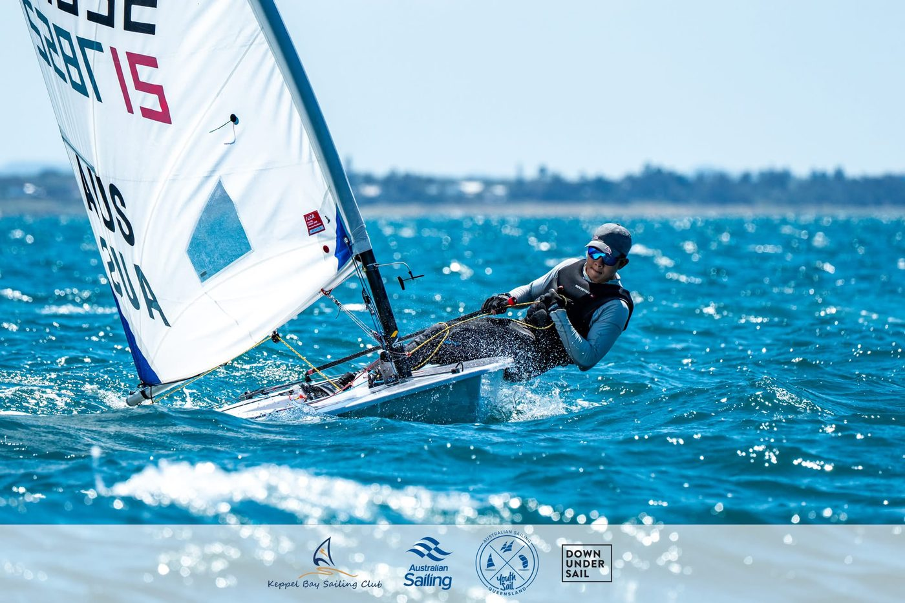
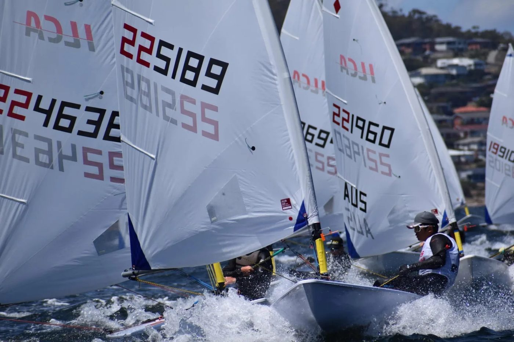

01我的故事
在世界級風浪中，展現台灣少年帆船實力
17歲的莊凱勝，以高度的自律與熱愛專注於ILCA級別帆船運動，已在國際賽場嶄露頭角。2022年首次代表台灣出征Optimist世界錦標賽與亞洲錦標賽；2023年轉型ILCA4級別，奪得全國運動會金牌，並代表國家隊參加中國寧波Asian Open Sailing Championship。
2024年起，移地至澳洲布里斯本Royal Queensland Yacht Squadron（RQYS）長期訓練，在資深總教練指導下，技術與戰術逐步與國際標準接軌。進步軌跡紮實且清晰：2025年於秦皇島ILCA亞洲錦標賽取得ILCA6總排名第7名、U19組第5名；隨後在2026年塔斯馬尼亞大洋洲暨澳洲錦標賽中，與多位奧運級選手同場競技，取得ILCA6全場第19名、U19組第7名，名次較去年大幅提升22名。
未來規劃包括2026 ILCA6 Youth World
Championship、ILCA6 Mens’ Championship、
Sail Melbourne、Sail Brisbane，以及2027 U21 World Championship，並於2026年轉型 ILCA7，累積高強度國際比賽經驗。每一次海外磨練所累積的專業知識，未來也將回饋台灣帆船運動，協助培育青年選手，提升國內競技環境與國際能見度。

